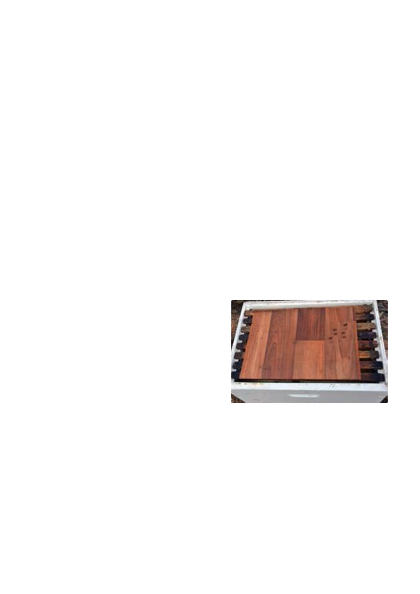

GENERAL BEEKEEPING
Spring hive development
By Gary Montgomery (Photos credits: Aust Beekeeping Guide; Vic Gove Ag Notes; Cashmanbees.com
If you have followed the appropriate winter hive management practices covered in these notes over the past
two months including checking the hives intermittently to assess the need for any supplementary feeding by
"lifting" them from the rear, your hives should have "wintered" successfully.
Now, proper hive management in early spring (September) is critical for maximizing success for the
forthcoming season.
Your hives now should be very carefully assessed in relation to the factors listed below.
First inspection after winter
This should only be carried out when it is a relatively warm day (18 degrees +), there is little wind and worker
bees are flying. Opening the hive when it is too cold will allow warm air to escape, cause the winter bee
cluster to “break-up” as you remove frames for inspection and causes stress to the bees.
All of these factors may result in a setback to brood development and increased rate of use of the remaining
honey stores in the hive, as the bees will need to consume more food to reheat the hive.
When you do open the hive for inspection, carefully adjust the hive mat on the top of the frames, to ensure
it covers those frames you are not inspecting, to retain as much warmth as possible in the hive.
Stores of honey and pollen
At the beginning of springtime, honey stores in the hive
are at their lowest level. Foraging bees from the hive will
have become increasingly active, consuming more of this
food store for energy.
With increasing amounts of pollen and nectar being
brought into the hive, the queen will be increasingly stim-
ulated to lay, resulting in significant brood development.
For one comb of brood to successfully develop, one full
comb of honey, plus pollen stores, is necessary.
As this brood develops and emerges from the cells, the newly emerged young bees require some of the in-
creasingly scarce stores of honey, although are not yet able to forage and contribute to its replenishment.
This puts significant pressure on the remaining scare food supply inside the hive.
The sudden growth of hive numbers, along with diminishing supplies of food, may result in what appeared to
have been a strongly developing hive, suddenly being significantly depleted in numbers, as bees die from lack
of food. This is referred to as “spring dwindle.” Careful checking of the available food stores at the start of
spring can avoid this problem.
Geelong Beekeepers Club ∙ General Beekeeping
24